For this project, we were introduced to open source hardware by 3D printing and assembling a prosthetic hand. I worked with Rebecca on this project and had a good experience learning how to assemble the Phoenix Hand V2, critiquing the instruction materials available in written and video form, and extending our designs by making modifications to the hand to allow for a new functionality. There were some frustrations in the process, but they provided me opportunities to learn and I think they will apply well as we head into our final project that involves inclusive design and prosthetics in the coming weeks.
Part 1+2: Reviewing Documentation, 3D Printing & Assembling
I first explored the resources on e-NABLE hub, specifically for the Phoenix Hand V2. After downloading the STL files for the parts, I began to lay out the parts on build plates in Prusa Slicer. I didn’t have too much trouble uploading the files, rescaling the parts to 150% size, and reorienting the parts to fit better on the plates. However, I had some confusion about which parts I needed duplicates of, the purpose of the parts, and which parts were left hand vs. right hand specific.
After poking around with some of the instruction resources, I was able to duplicate parts if needed in Prusa and lay them out on build plates. I created a separate plate with right hand vs. left hand specific parts so that I could coordinate Rebecca more easily in terms of printing without having duplicates or parts for the wrong hand. We ultimately decided to build a left hand, so it was easy to ignore the right-hand specific parts since they were isolated onto one build plate. With Ian’s instruction in class, I merged the parts on individual plates and set the raft settings so that there would be good adhesion of the parts onto the plate, especially for small parts like the pins. The raft settings I used are listed in the image below. Overall, I set 3 raft layers to be printed with 8 mm of expansion around the parts. I also turned on snug supports so that sharp overhangs in parts like the fingertips and palm of the hand would be printed successfully.
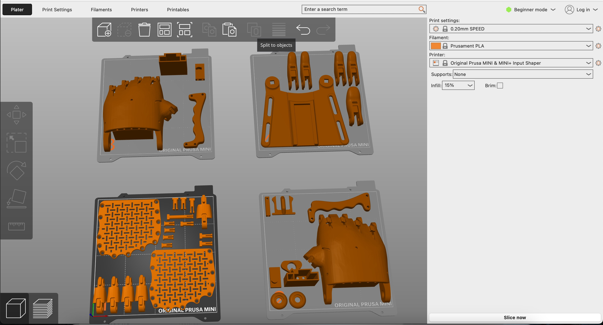 Layout of our buildplates 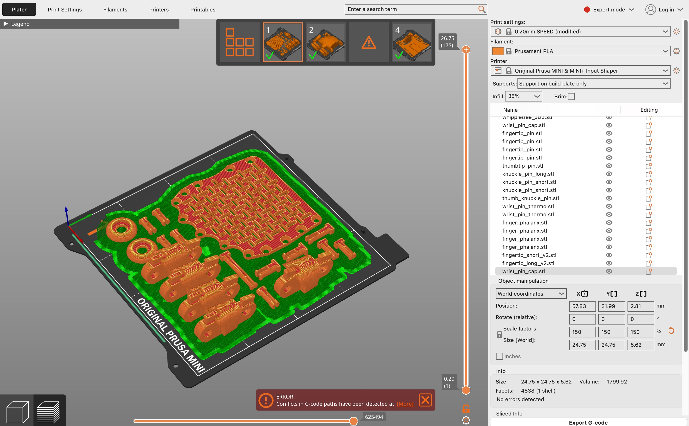 Print settings Layout of our pieces with raft
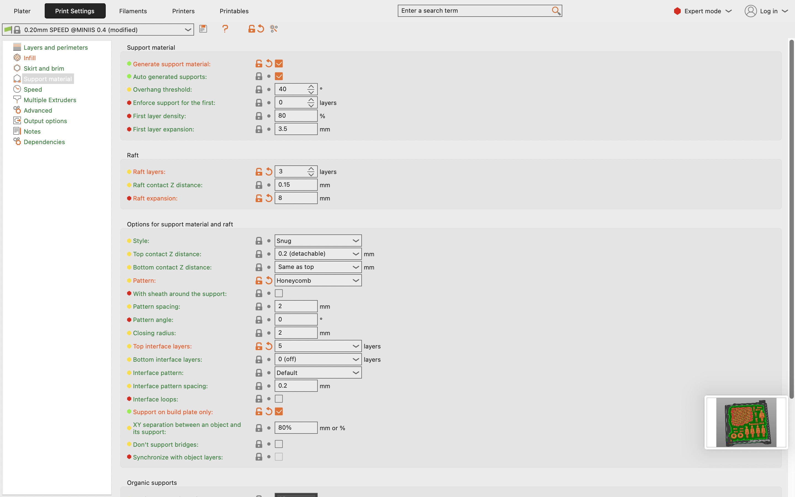
Raft settings
Layout of our pieces with raft
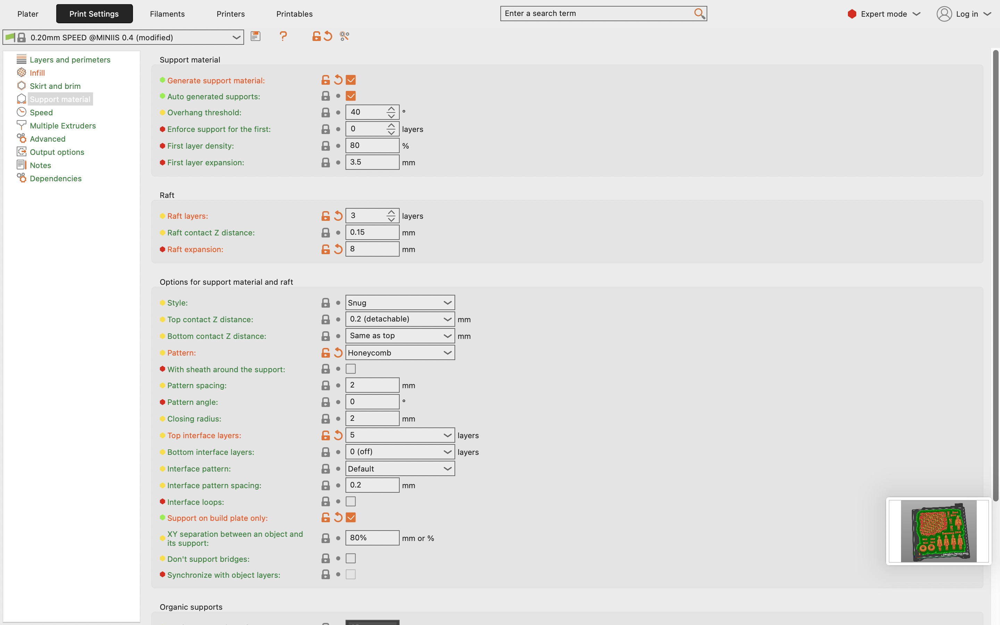
Raft settings
Initially while printing, I accidentally forgot to merge the parts, so the raft layers were printing unevenly and on top of each other. I think if I continued on with this print, some of my parts would have been uneven in terms of their curved surfaces and at the base. I eventually caught my mistake, stopped the print, and edited my file so that the parts were merged. With this second go-around, my pieces printed successfully!
 Printed pieces on our build plate
Printed pieces on our build plate
I found coordinating the prints with Rebecca went smoothly. She printed a palm and the gauntlet on the first day while I printed the pins and knuckles. So on our first day of assembly, we were able to assemble part of the hand while printing off the remaining parts: like the left-hand specific pieces and the fingertips.
In terms of documentation, I followed the instruction slides from e-NABLE and two YouTube tutorials on the assembly process: one from The Helping Hand Project: NCSU and one from John Diamond. I think overall, I used the instruction slides more because they had more close-up views of the different parts used and I think the differing coloration of the fingertips, knuckle pins, and phalanxes was especially helpful. However, one flaw of the instruction slides was that it was more difficult following along with the stringing process since so many steps were combined into a written form with few pictures to follow along with. This is one advantage of using the videos since I could more easily follow along with these multi-step, dynamic processes with visual input instead of purely written instructions.
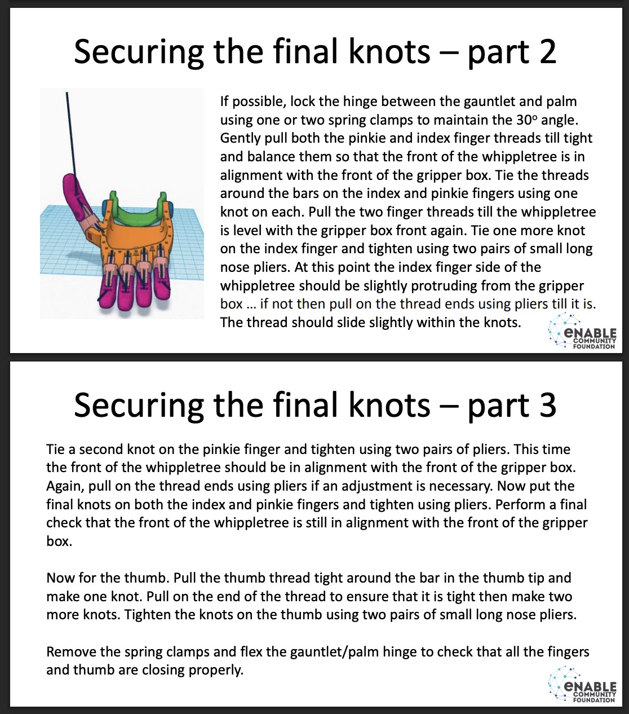 Some wordy instructions that could use some improvement, I felt especially lost at these stepsOne suggestion to improve all three of these instruction formats would be having a clear section at the beginning to describe all the parts needed. It was difficult to figure out how many of each part I needed to print early on in the project, especially since the functions of the parts were foreign to me at the start of this process. It would be helpful to have a table listing what the name of each part is, how many I would need, and a short description of its purpose. It would also be helpful if in each step of the process, there were clear instructions of what parts I would need to gather, making clear descriptions for things like short vs. long fingertips and what type of pin to use when assembling the fingers. It could also be helpful showing a zoomed-out diagram of how the different lengths of string should be strung throughout the palm, fingertips, and whippletree–using different colors to represent the different lengths of string used for the thumb vs. the index and middle finger vs. the ring and pinky finger.
It could also be helpful to have more easy-to-read instructions. For example, the specific parts used in each slide could be highlighted for easier scanning of instructions while you’re looking through the manual for the first time to get a sense of the assembly process.
Overall, I found the assembly process to be smooth, with some difficulties when it came to stringing the fingers. Like mentioned above, it wasn’t the fastest or most straightforward process figuring out which joint went with which fingertip and which pin to use, but the actual experience of putting the pieces together was smooth. We did have to use some files and pliers to get rid of extra support material that was blocking some of the screw holes or pin holes–especially in the palm, but we were able to clear out the extra material eventually.
It was also a fun experience learning how to mold the gauntlet. Gianna helped us heat up our gauntlet and use the mold to help with the curvature of the piece. After this initial molding, we came back to Gianna to further define the shape of the gauntlet when we attached it to the palm–which involved the heat gun, some bending, and some holding the pieces in place as it cooled.
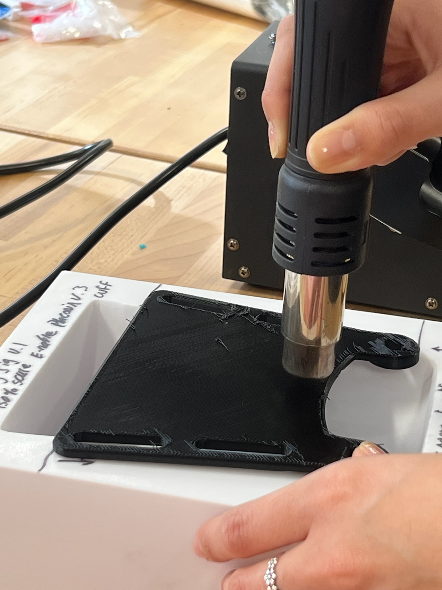 Using the heat gun to bend our gauntlet 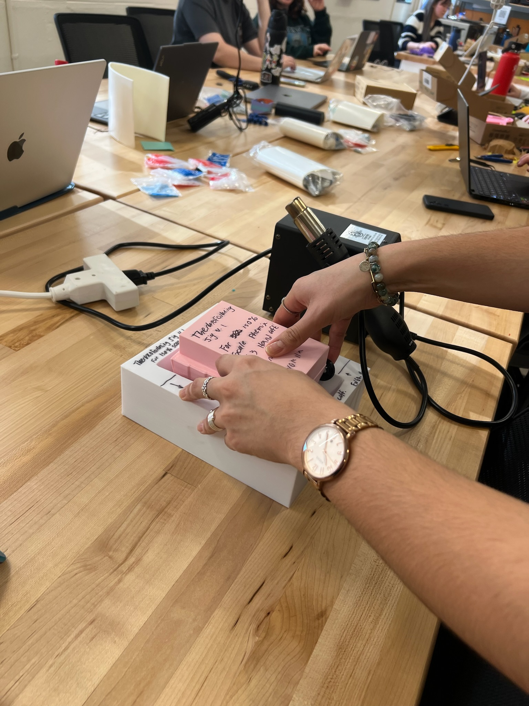 Gianna helping us shape our gauntlet with the mold 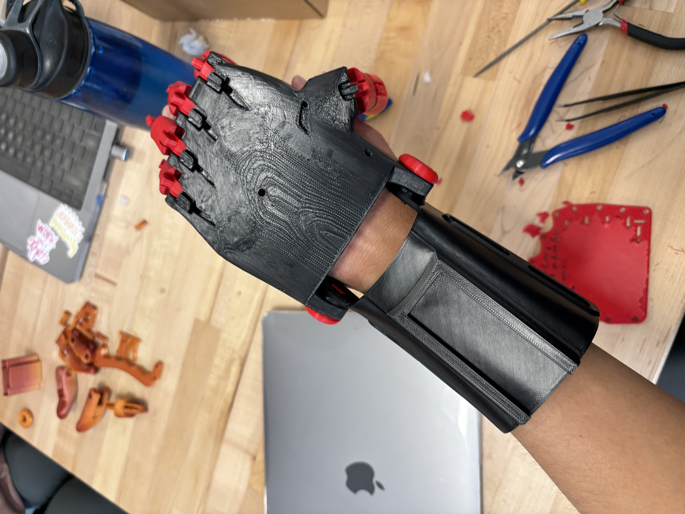 Half way done with assemblyOnce the parts were attached and the gauntlet was molded, we worked on stringing the fingers. Initially we used an elastic string from the extra-parts drawer since our kit got lost sometime over the weekend. After some confusion on which holes to loop the string through and how they wrapped around from one finger, to the whippletree, to a different finger, we got all the strings attached. However, when we started testing the hand, the string would get more taut around the whippletree, but it wouldn’t get much tighter around the fingers, so none of the fingers were bending. After some consultation with Gianna, we tried tightening the strings before making our final knots to help with the contraction of the fingers, but we still didn’t have any movement. We talked to Ian and he suggested switching to the window-blind string that had much less elasticity. After redoing this string, we got contraction of the fingers! The reduction in elasticity definitely helped a lot since the pulling of the string around the palm region could be translated to the pulling of string around the finger region. Our classmates had similar difficulties using the elastic material but had similar success when they switched to the window blind string.
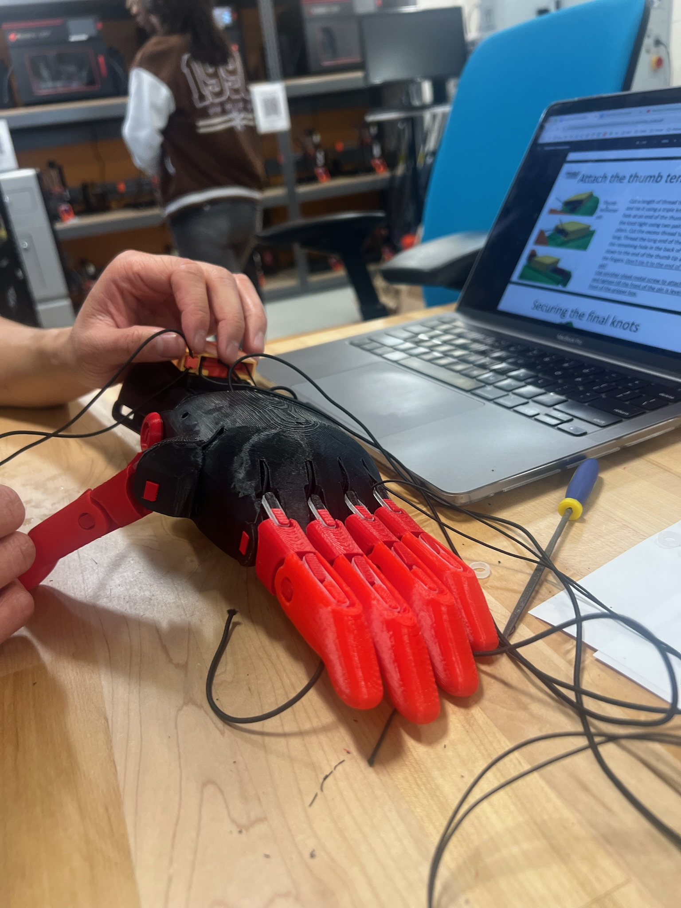 Unsuccessful attempt when using the elastic string 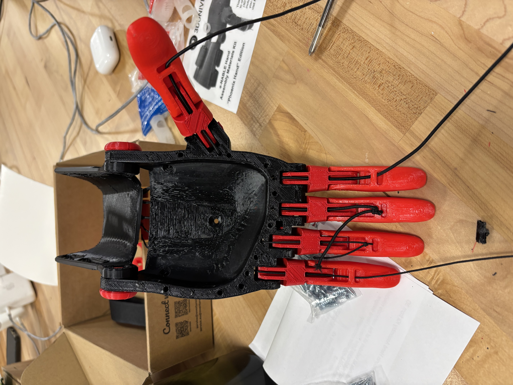 Maintaining the 30 degree angle for optimal finger contractionOne good thing about this process was that since we were learning how to do the stringing for about 1.5 hours the first time around, redoing it the second time with the new string only took about 15 minutes because the process was familiar now.
We finished off the assembly by adding the fingertips, velcro straps, and gripper bar.
 Final product with new string
Success!
So much joy once we switched out the strings
Final product with new string
Success!
So much joy once we switched out the strings
Part 3: Extend, Critique, & Reflect
In the last part of this project, we worked on modifying the Phoenix V2 to do a particular activity. Rebecca and I decided to make modifications to allow someone with a hand prosthetic to hold a paintbrush and paint. Our initial design focused on a conical shaped holder for the paintbrush to be inserted into and secured around the index finger. After sketching it in Fusion, we found that it wasn’t the best design in terms of being able to secure the paintbrush in place because it would require some kind of additional clamping piece. Additionally, it was pretty long and bulky, meaning it could get in the way of the person’s hand movement.
 Initial sketches
Initial sketches
 Additional sketches
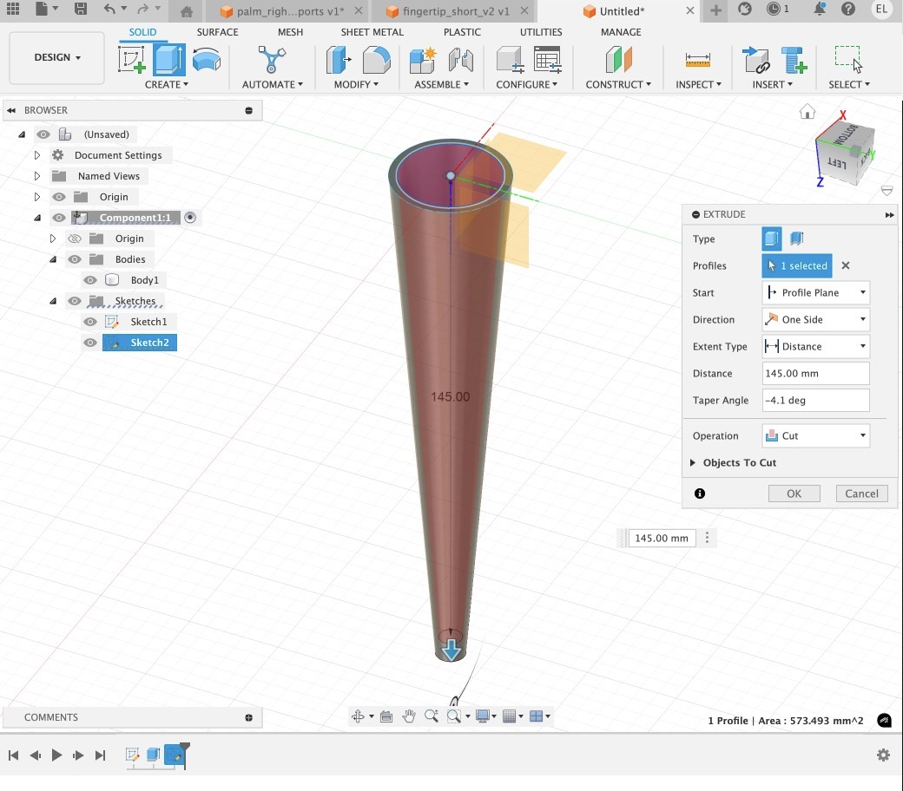
Iteration 1- cone shaped design
Additional sketches
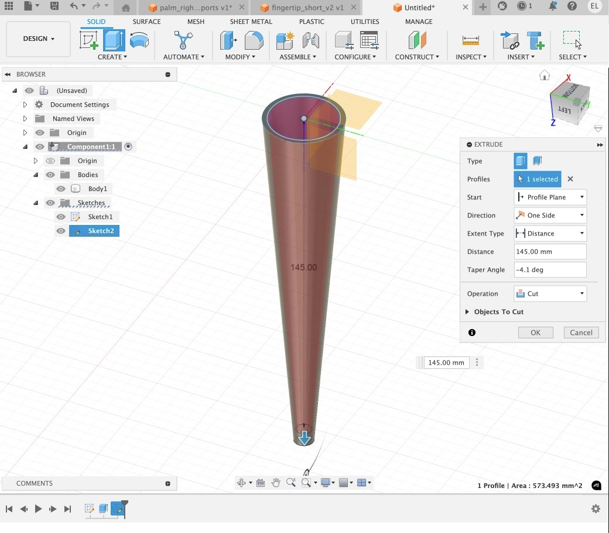
Iteration 1- cone shaped design
From there, we decided to alter our design to be more streamlined. Our second iteration was a ring configuration that could be looped around the index finger and had a small clamp region that could be bent and pulled to fit different sized paintbrushes into. Through this process, I watched some YouTube tutorials on how to draw sketches and extrude on curved surfaces. We also made a modification to this iteration where we could have the paintbrush holder directly imbedded into the phalanx part.
 Learning how to draw sketches on curved surfaces
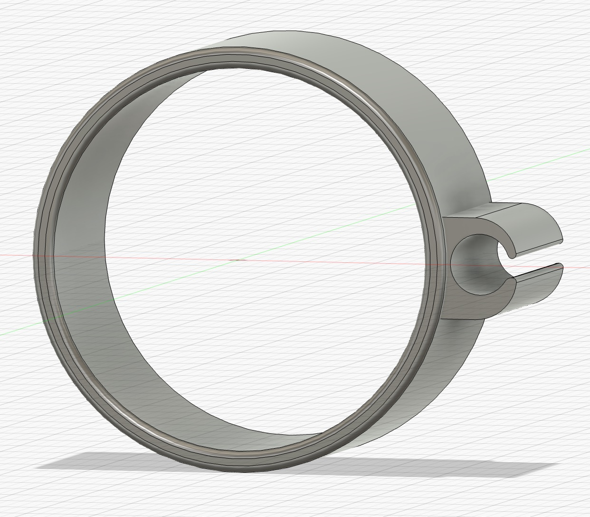
Iteration 2- ring + clip-like design
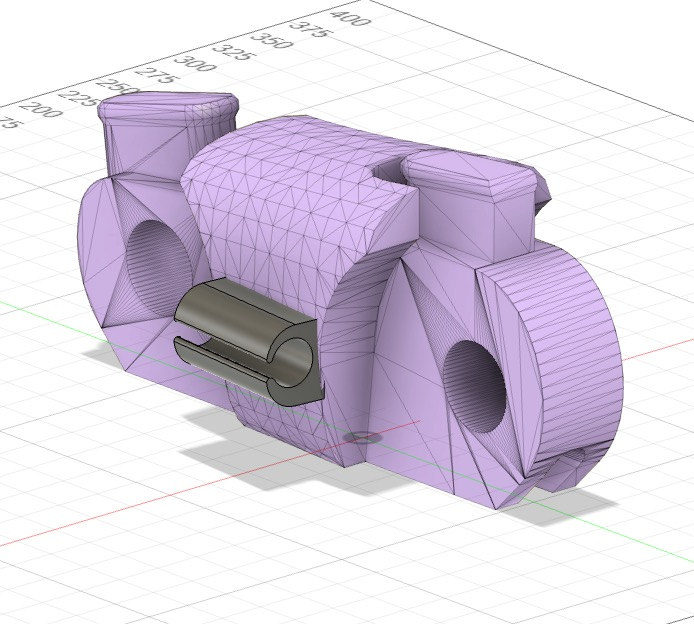
Iteration 2- embedded into the index phalanx
Learning how to draw sketches on curved surfaces
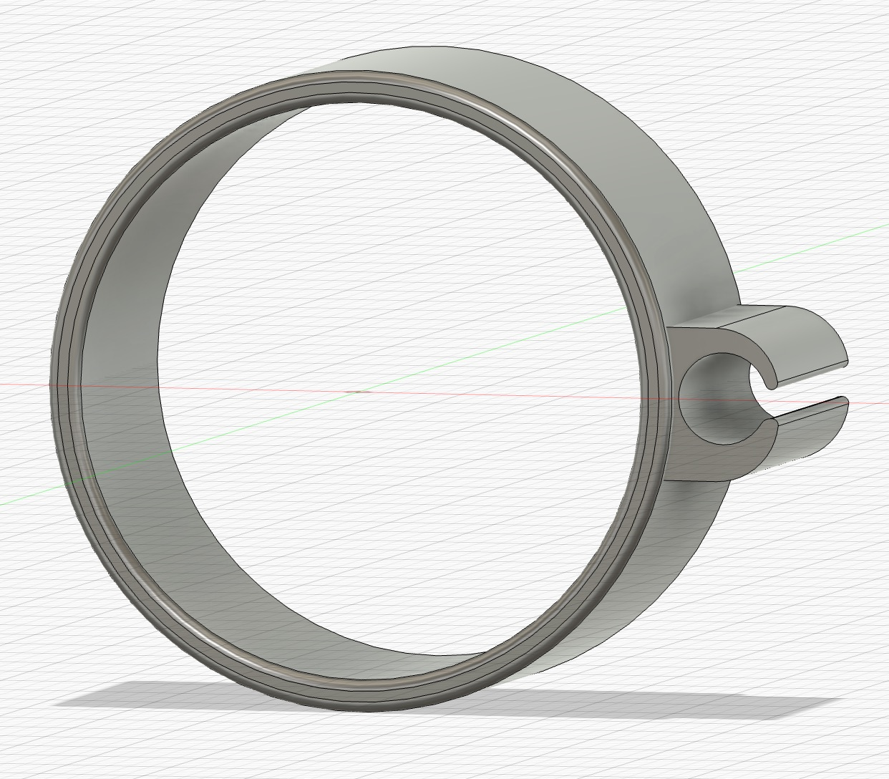
Iteration 2- ring + clip-like design
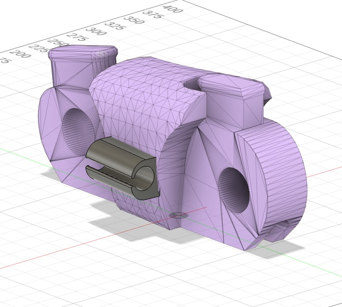
Iteration 2- embedded into the index phalanx
If we continued iterating on this process, it would be interesting to talk to painters with hand prosthetics to see what features or designs would be most helpful for them. It would also be a great experience if we could hear from people who use different types of prosthetics about the products they seek, or modifications to their devices that they would want to help them perform different activities in their lives. But overall, I think this activity was helpful in exploring the adaptability of different designs and having an imaginative client in mind.
Final Thoughts
In working on this project, I connected aspects of prosthesis development and the ethics of design to previous readings we’ve done for class. In reference to The Design of Everyday Things by Don Norman, I think the e-NABLE community does a great job of incorporating the steps of the Human-Centered Design Process: observation, idea generation, prototyping, and testing. For example, the e-NABLE platform allows users to share personal stories and examples of how they use the Phoenix V2, incorporating the idea of empathy to fuel designs.
An idea from this book that also relates to this project is the mentality of using activity-centered design to motivate products instead of purely user-centered design. By taking this more broad perspective in building prosthetic hands that allow users to complete activities in their daily lives more easily–like in the example of our paintbrush holder modifications–it makes our designs more inclusive to a wider audience instead of focusing on a particular type of person with particular needs.
Adding onto this idea of inclusivity, I think one pitfall of the Phoenix V2 is that it is not the most accessible in terms of assembly and fit. There are barriers to understanding the instruction manual, resource barriers in being able to print the parts, physical requirements to assemble the hand, and economic barriers that could prevent people who need this device from being able to get one. Moreover, the adaptability of the hand to a wide audience has its limitations. In Norman’s book, he states that “any system that does not allow for special cases will fail” and I think this applies to the design of the hand. Besides being able to scale the size of all parts to be smaller or larger, there aren’t many modifications in the original design that can be made for people of different needs. It would be nice to see variations in for example the palm shape and gauntlet design so the hand could be more accessible and useful for people with different amputations, malformations, and needs.
This relates to the ideas in What Can a Body Do? by Sarah Hendren which defines disability as a conflict between user and environment and the resulting “misfit” relationship between the two. I think this mental framework was helpful to keep in mind during this project because it allowed us to utilize the capabilities of our imaginative client’s bodies–for example, being able to move a wrist–and adapting the environment to these abilities. It reframed my perspective on the purpose of a prosthetic. Instead of it being a replacement for a person’s body parts, I learned to appreciate the prosthetic as a tool that enhances a person’s abilities and makes the interactions between body and environment more harmonious.